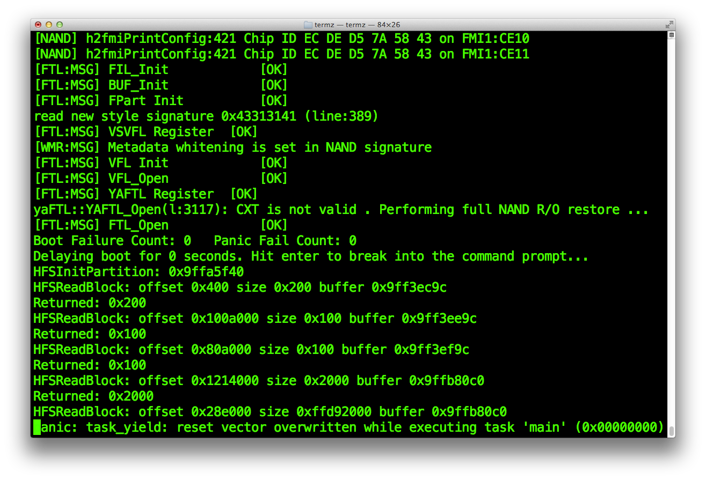
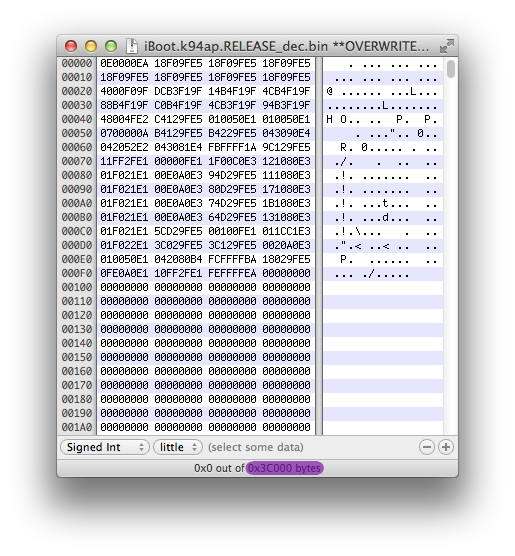
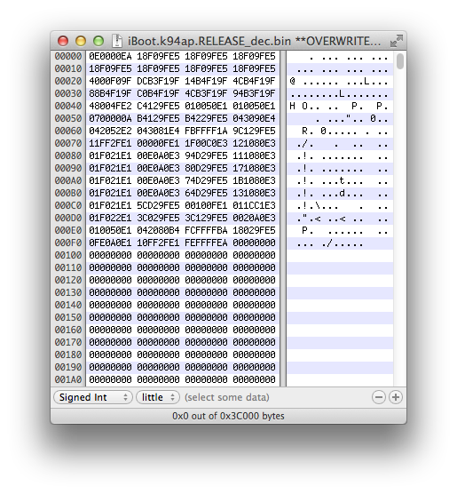

Overwrite current running iBoot
In the previous part of this writeup, we dumped TLB data from device's memory with a payload called memrw while iBoot is running normally. Then, we placed the dumped TLB data to a strategic position in the corrupted HFS+ filesystem in order to make iBoot HFS+ driver write back this data where it should be in device's running memory. Instead of being overwritten by some random data, the TLB in running memory is overwritten by a copy (or a near-copy) of itself. This is enough to let the HFS+ driver continue writing data from the corrupted filesystem to running memory instead of getting iBoot to trigger a translation error panic at this point.
After iBoot HFS+ driver is writing a few megabytes of random filesystem data ahead of TLB position in running memory, we get the bootloader to trigger a reset vector overwritten panic. 
The reset vector (RST) is defined as the first location or memory address where a processor must goes in order to find the first instruction it has to execute after being reset (or powered on). On the ARM processor for which our iOS devices are built from, the reset vector address is set to 0x0. This means that the processor will directly goes to memory address 0x0 and run the instruction located there.
All iOS low-level bootloaders have their reset vector instruction located at 0x0 in the image. In case of a 32-bit ARM processor, this instruction is the first 0x4 bytes of the image and it has always the same well known value 0x0E0000EA (0xEA00000E in reverse-order representation). From the panic message returned by iBoot in the screenshot above, we can read the following.
panic: task_yield: reset vector overwritten while executing task 'main' (0x00000000)We can understand from this error message that the reset vector value of current running iBoot in memory has been overwritten by some data (0x00000000 to be exact). Actually, this is iBoot HFS+ driver which has finally hit the reset vector of iBoot itself by overwriting it with some data from the filesystem. Since we previously have zeroed the complete Exploit partition using dd, this is normal that the reset vector gets overwritten with zeroes. Same as we did with the TLB, we can control what will being written to running memory by writing the data we want at strategic positions in the filesystem. If we would consider that iBoot doesn't check the reset vector state (and any other checks like that), the whole current running iBoot image would be entierely overwritten with zeroes. Obviously, the device would become unresponsive since iBoot is gone.
In order to avoid getting a panic message saying that the reset vector has been overwritten, what we can do is to make the HFS+ driver overwrite the current running iBoot in memory by a exact replica of the same iBoot data. Just like we did previously with TLB. So, iBoot reset vector will be overwritten by a true iBoot reset vector instead of zeroes.
First, we will only overwrite the reset vector before do it for the whole iBoot image to verify that we calculated the right position in the "Exploit" partition where the iBoot data should be placed. If we did it correctly, we should see the data we wrote on the file system (at the position of iBoot reset vector) instead of 0x00000000 in the panic message returned by iBoot.
Important reminder, we previously analyzed a bit of iBoot memory layout in order to understand what is being overwritten by the HFS+ driver. Here is a summary of the most important addresses that we have to keep in mind to go further in the exploitation.
Memory space- iBoot reset vector : 0x9FF00000
- iBoot HFS+ driver fifth read buffer address : 0x9FFB80C0
- TLB location : 0x9FFF8000
- iBoot reset vector (first iteration of virtual address space) : 0xBFF00000
- iBoot HFS+ driver fifth read offset (filesystem) : 0x28E000
- TLB location (filesystem) : 0x2CDF40
As explained previously in this writeup, at the fifth block read, iBoot HFS+ driver will start to write megabytes of data from HFS+ filesystem address 0x28E000 to iBoot running memory address 0x9FFB80C0. It will eventually overwrite TLB in running memory with original TLB data we wrote at a specific position in filesystem, 0x2CDF40 exactly. The memory overwrite process will continue until it reaches the virtual address space after more than [Device RAM size] bytes written. This ends up when iBoot reset vector in the virtual address space first iteration (known as "the mirrored iBoot") gets overwritten with zeroes and makes iBoot to panic, returning the message we got in the screenshot above.
The presence of iBoot in the virtual memory space allow us to overwrite the bootloader itself, any changes made to this "mirrored iBoot" will be reflected to the physical address space one (the main iBoot which is located at 0x9FF00000). Remember that iBoot HFS+ driver write data to iBoot memory bottom-up (from low to higher addresses) and does not goes backward (how could we reach 0x9FF00000 from 0x9FFB80C0 ?).
So, let's try first to overwrite the reset vector of iBoot in its virtual memory address space by writing some meaningful data at a strategic location on the Exploit filesystem.
Same as we previously did with TLB, let's create an empty blank file using dd. Before, we will need the size of the iBoot image which is currently executing in memory to create a container which will be large enough to hold a copy of it. We already have decrypted the iBoot image, file named iBoot.k94ap.RELEASE_dec.bin, which is exactly the same data as the one running on our device memory.
Get the size of this decrypted image from file properties or using a hex editor.
From this, we know that our iBoot size is 0x3C000 (245 760). Also, remember that our device which is an iPad 2nd has a block size of 8192 bytes. Create an empty blank file of [iBoot size]+[Block size] using dd, were iBoot size is 245760 (which is 30 blocs of 8192 bytes) and Block size is 8192.
So, we have to create an empty file for which the size is 31 blocs.pmbonneau-mac#dd if=/dev/zero of=iBoot.k94ap.overwrite_9ffb80c0.bin bs=8192 count=31
The following four addresses will be useful for us to calculate the location of where we must write iBoot data on the filesystem.
Memory space- iBoot HFS+ driver fifth read buffer address : 0x9FFB80C0
- iBoot reset vector (first iteration of virtual address space) : 0xBFF00000
- iBoot HFS+ driver fifth read offset (filesystem) : 0x28E000
Do the following maths to calculate the iBoot data blocks position.
0xBFF00000 - 0x9FFB80C0 = 0x1FF47F40This how much bytes there is between our heap buffer address and the first iteration of iBoot in the virtual memory space.
Now, we must calculate at which position we should write those blocks in the Exploit partition, to make iBoot HFS+ driver write them in the running memory at the right position when the heap buffer overflow is triggered.
So, if we want to know exactly at which position we must write back our iBoot data in the Exploit HFS+ filesystem, we must add 0x1FF47F40 ("mirrored iBoot" data offset in memory) to 0x28E000 (heap buffer overflow trigger point in the filesystem).
0x28E000 + 0x1FF47F40 = 0x201D5F40In other words, iBoot data must be written to 0x201D5F40 in our Exploit filesystem in order to be written to 0xBFF00000 in running memory once the heap buffer overflow occures.
Now, we must find which block 0x201D5F40 is on the filesystem by dividing by device [block size].
0x201D5F40 / 0x2000 = 0x100EA (65770)We will have to write our iBoot data at block 65770 in our Exploit filesystem. Before do this, we must block-size align the data we will put in the three empty block we previously created using dd.
Calculate the remainder by doing the following maths.
Note : the structure is the data contained in block we write in filesystem.
[Position of our structure] - ([number of block between our structure and heap address] * [block size])
0x201D5F40 - (0x100EA * 0x2000) = 0x201D5F40 - 0x201D4000 = 0x1F40
This means that we must add a padding of 0x1F40 bytes before our iBoot data, at block 65770.
In a hex editor, open the empty file iBoot.k94ap.overwrite_9ffb80c0.bin we previously created using dd.
Go to position 0x1F40 in that file.
Everything you write to this position will be written at address 0xBFF00000 in running memory when the heap buffer overflow will occures.
Let's try overwrite iBoot reset vector 0xEA00000E at 0xBFF00000 by 0xEFBEADDE (0xDEADBEEF in reverse-order representation)
Save the file, then upload it to /exploit on device using SCP.
From a SSH connection on device, edit the exploit.sh script using a text editor. Uncomment line echo "Overwriting iBoot..." then add the following dd command.dd if=iBoot.k94ap.Overwrite_[heap buffer address].bin of=/dev/rdisk0s1s3 bs=[block size] seek=[block position]
Remember, we set at which position to start writing data from by specifying the seek parameter to the dd command. Note that your Exploit partition size must be greather than 65770 + 31 blocks, which is 65801 * 8192 = 539 041 792 bytes (514 MB) in order to be able to write blocks at position 65770 to 65801 using dd. This has been discussed previously in the LwVM partitionning guide.
I strongly recommand to completely obliterate the Exploit HFS+ filesystem before run the exploit.sh script again.
ipad-k94ap#dd if=/dev/zero of=/dev/rdisk0s1s3 bs=8192

Once the Exploit partition is zero-ed, run the script. It should re-write, at their exact position into the partition, HFS+ filesystem data blocks, TLB ones and also write blocs that will overwrite the current running iBoot.
Next, run the iBoot.k94ap.RELEASE_HFSReadWrapper.bin image.
ipad-k94ap#kloader /bootloaders/iBoot.k94ap.RELEASE_HFSReadWrapper.bin

The iBoot image should run a few seconds after and you will see the output of our HFSReadBlock() wrapper. If the reset vector has been properly overwritten, iBoot should panics and now return an output message with 0xdeadbeef instead of 0x00000000 as value for the overwritten reset vector.
Now, we are certain that data at address 0x1F40 in bloc 65770 of the Exploit partition is exactly written at address 0xBFF00000 (reset vector) in iBoot running memory. Remember that iBoot memory space is replicated at each [Device's RAM size] iterations, so data written at 0xBFF00000 is also "written" at 0x5FF00000. Obviously, overwriting reset vector by 0xdeadbeef will still make iBoot panic because this is not a valid instruction. To avoid corrupting the bootloader, we must overwrite it by itself.
Let's the HFS+ driver overwrite the current running iBoot in memory by a exact replica of the same iBoot data.
In a hex editor, open again the file iBoot.k94ap.overwrite_9ffb80c0.bin we previously wrote 0xdeadbeef in. Open also the decrypted iOS 5.0.1 iBoot image, named iBoot.k94ap.RELEASE_dec.bin in a hex editor. This is the same iBoot image as the one running in our device memory.
Select all bytes of the decrypted image, then CTRL-C to copy them to clipboard.
Paste the copied bytes at position 0x1F40 in the iBoot.k94ap.overwrite_9ffb80c0.bin, this will automatically replace 0xdeadbeef by a valid ARM reset vector.